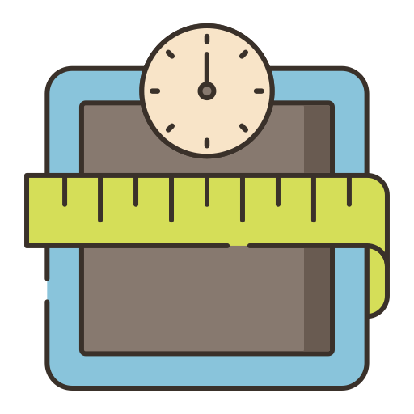

<ion-header [translucent]="true">
  <ion-toolbar color="dark">
    <ion-title color="light">
      App BMI
    </ion-title>
  </ion-toolbar>
</ion-header>

<ion-content class="ion-padding ion-text-center"  [fullscreen]="true">
    
  <ion-card color="dark" class="ion-padding">
    <ion-item>
      <ion-input label="กรองน้ำหนัก : " color="light" placeholder="kg"></ion-input>
    </ion-item>
    <ion-item>
      <ion-input label="กรองส่วนสูง : " color="light" placeholder="cm"></ion-input>
    </ion-item>
    <br>
   <ion-button color="danger" size="large" expand="block" class="ion-text-center">คำนวณ</ion-button>
  </ion-card>
  <ion-card color="secondary">
    <ion-card-header>
      <ion-card-subtitle>ผลลัพธ์</ion-card-subtitle>
      <ion-card-title>18</ion-card-title>
    </ion-card-header>
  </ion-card>
  <br>
  <ion-card color="dark">
    <ion-card-header>
      <ion-card-subtitle>แปรผล</ion-card-subtitle>
      <ion-card-title>อยู่ในเกณฑ์ปกติ</ion-card-title>
    </ion-card-header>
  </ion-card>
</ion-content>
